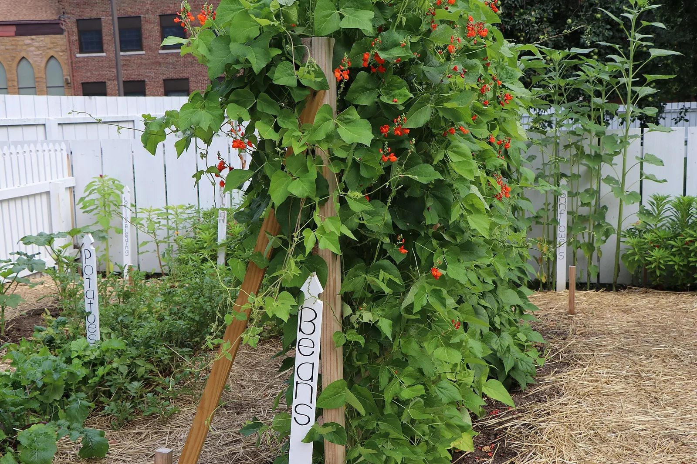

The rules
143 rules, and every one has to say how it works. If a claim can’t name its mechanism in one sentence, it’s written down and graded but not enforced. You can download the whole graded set as one file.

Start here · 5
The handful the planner leans on most, and the first ones a new bed runs into.
- Cold-hardy annuals can be sown or transplanted before the last spring frost (hardy crops about three weeks before, half-hardy about two weeks before). Tender crops wait for the frost itself. Promising
- Don't sow or set out tender crops before your last frost date Well established
- Hardiness zone is the correct variable for perennials, and only for perennials. Well established
- A bed whose shorter side runs well past ~1.2 m (4 ft) has interior ground that can't be reached from its edges. Promising
- A planted bed keeps every plant within arm's reach of a path, edge, or walkable row. Promising
Growing things well · 4
A way into the cultural advice. These practices pay off, but the planner can’t score them for you.
- Potato tubers that catch light while growing (wherever soil settles or washes away and shallow tubers are left uncovered) turn green and become bitter and toxic, so the crop must be kept covered with soil. Promising
- Row cover keeps pests off young crops; lift it at bloom for insect-pollinated ones Promising
- Keep mint contained. Planted loose in a bed, it takes over Promising
- A direct-sown root crop left unthinned grows crowded roots that stay small. The seedlings stand far denser than they can mature and compete for the same soil, and the roots twist and intertwine and never size up. Promising
Spacing
How much room a plant and a bed need.
- A bed whose shorter side runs well past ~1.2 m (4 ft) has interior ground that can't be reached from its edges. Promising
- A plant that must climb needs an assigned support strong enough to carry it. Well established
- A plant's mature spread must fit its allocated area. Well established
- A planted bed keeps every plant within arm's reach of a path, edge, or walkable row. Promising
- A tree or shrub plant team's ground is its drip-line ring, not a bed Well established
- Don't put full-sun plants where you've marked shade Well established
- Lettuce and spinach do better in a taller neighbor's summer shade Promising
- Living supports have finite load capacity. Promising
- Perennial members must not be sited in ground that is annually turned or rotated. Well established
- Plants over 120cm mature height belong on the north side of a bed. Well established
- Sun-requiring species must not sit in the computed shadow of a taller neighbor. Well established
- Vining cucurbits in beds under about 2 m (6 to 8 ft) escape the bed. Well established
Timing
When the season lets a crop start, and the heat and cold that bound it.
- A banana grows slowly through cool months. A good hunch
- A cover buys cool-season crops a week or two at the ends of the season. A good hunch
- A vine assigned to a living support must be sown after the support is established, when corn is ~6 in (~15 cm) tall, roughly 2-3 weeks in. Sowing both at the same time is too early. Well established
- Beans that bloom in the hottest weeks drop their flowers. Promising
- Cold-hardy annuals can be sown or transplanted before the last spring frost (hardy crops about three weeks before, half-hardy about two weeks before). Tender crops wait for the frost itself. Promising
- Don't plant a crop that can't mature before your frost-free season ends Well established
- Don't sow or set out tender crops before your last frost date Well established
- Frost can form on a night the forecast low is a few degrees above freezing. Promising
- Hardiness zone is the correct variable for perennials, and only for perennials. Well established
- Hardy crops can go in later, counted back from the freeze they can't stand Promising
- Lettuce and spinach that ripen in hot, long days run to seed. Promising
- Long-season warm crops are started indoors several weeks before the last frost and set out after it. Tomato and tomatillo go about six weeks ahead, pepper and eggplant about eight, basil six. Promising
- Onion cultivar group must match site latitude. Well established
- Pepper fruit set suffers when night temperatures stay above ~21 °C (70 °F); the same hot spell's high days compound it. Promising
- Succession sowing at intervals of about two weeks extends harvest for short-DTM crops. Promising
- Tomato fruit set fails when night temperatures persistently exceed ~21 °C (70 °F); high day temperatures above 29-32 °C (85-90 °F) compound it. Well established
- Tomatoes, peppers and eggplant set little fruit while the nights stay cool. Promising
- Very tender crops go out about two weeks after the average last spring frost: tomato, pepper, eggplant, lima beans, melons, watermelon, pumpkin and winter squash. Tender crops go in at the frost itself. Promising
- When lettuce and spinach bolt, summer greens keep growing A good hunch
- Where frost is rare, plant a young fruit tree as the rains begin. Promising
- Where frost is rare, sow so the crop grows through months that suit it. A good hunch
- Where frost sets the season, a crop still needs enough warm months to reach harvest. A good hunch
Rotation
What must not follow what, and why.
- Alliums and carrot family are unrelated to nightshades/cucurbits/brassicas and can break those families' rotation cycles. They are still not "low-pressure" and need their own rotation. A good hunch
- Do not plant alliums in ground that held alliums within 4 years, and know that the worst allium disease outlasts any rotation. Promising
- Do not plant beets, chard, spinach or amaranth in ground that held them within 3 years. Promising
- Do not plant brassicas in ground that held brassicas within 4 years (extension recommends 4-7, and even that is not a cure). Promising
- Do not plant cucurbits in ground that held cucurbits within 2-3 years. Promising
- Do not plant legumes in ground that held legumes within 3 years; the root rots build where they repeat, and the worst of them outlast any garden rotation. Promising
- Do not plant lettuce or its family in ground that held it within 3 years, and know that lettuce drop's fungi live on most other vegetables too. A good hunch
- Do not plant the carrot family in ground that held it within 3 years. Promising
- Don't follow a Verticillium host with raspberries, strawberries or stone fruit Promising
- Don't plant nightshades where nightshades grew in the last 3 years Promising
- Don't plant raspberries, strawberries or stone fruit where your log shows a wilt host Promising
- For rotation, a plant team's crop families count across its whole bed Promising
- Late blight comes back from last year's potatoes. It does not come back from the soil. Tubers left in the ground carry it through winter as volunteers, so ground that grew potatoes last season needs its volunteers pulled before this year's tomatoes or potatoes go in. Promising
- Limed ground is the wrong ground for the next potato crop, because common scab worsens as soil pH rises and lime raises it. Promising
- On ground that has carried brassicas within the rotation interval, a measured soil pH below about 7.2 leaves clubroot's door open; raising it is the lever every clubroot guide we read names, and the direction is all we give. Promising
Feeding
What the soil gives and what it needs back.
- Do not apply fresh high-N fertilizer to root crops. Promising
- Fertilizer recommendations without a soil test are guesswork. Say so. Well established
- Ground the gardener has observed to stand water after rain is a site problem to fix before planting. Selecting plants around it does not solve it. Promising
- If soil pH is too low for a plant, we say so and which way to fix it A good hunch
- Legume green manure raises available N for the subsequent crop. Promising
- To know how much lime or sulfur to add, you need your lab's recommendation from a test of your soil. We can say which way to go, but the amount has to come from the lab. Promising
- We check a soil pH against a plant's range only when it was measured in water, the way the ranges are written. A reading in calcium chloride is kept and shown, and never converted. Promising
Neighbors
What one plant does to the one beside it.
- A self-incompatible pome fruit's pollen partner has to bloom at the same time and make viable pollen. A triploid apple cannot be the pollen source, and a second tree of the same variety is not a second cultivar. Well established
- An insect-pollinated crop depends on an insect to move pollen between its flowers; no arrangement of plants substitutes for one. Well established
- Corn needs a block of at least three short rows side by side for good kernel set, and four rows is better. Well established
- Don't plant anything sensitive to walnut toxin (juglone) within a walnut tree's root zone. Nightshades are sensitive, and so are apple and cabbage. Well established
- Fennel may hold back neighboring vegetables with chemicals it releases. The evidence is thin, from lab tests mostly on weeds. A good hunch
- Ground that just carried cereal rye or a sorghum cover crop is a poor seedbed for small seeds for a few weeks. As the residue breaks down it releases chemicals that stop small seeds germinating, and the smaller the seed the worse it fares; transplants and big seeds largely shrug it off. Promising
- Some plants can't fruit from their own pollen, so they need a second plant of a different variety nearby. Well established
- Some plants come as separate male and female plants, and you need one of each for fruit. Well established
- Sunflower residue suppresses germination of some small-seeded species. Promising
- Two kinds of corn tasseling together spoil each other's kernels. Sweet corn pollinated by popcorn, field or ornamental corn goes starchy, and supersweet pollinated by any other corn loses its sugar. Keep different corn types 250 feet apart or 14 days apart in tasseling. Promising
Climate
Where the frost and zone numbers come from, and how far away they were measured.
- Adjusting a nearby station's frost date assumes average night lows track frost dates Promising
- Every derived climate value carries the tier, grade, station, and distance that produced it. Well established
- Frost dates can be downscaled by applying a standard lapse rate to elevation. Refuted
- Where no station or model reaches, 3+ seasons of your own frosts give rough dates A good hunch
- Your own frost records from 3+ seasons outrank any climate model for your plot Promising
Advice
Cultural practice the app shows you but can’t score, because it can’t see your bed.
- A basil dropped back into ground where a basil crop wilted and died young tends to do the same (growing normally to a hand's height, then stunting and suddenly collapsing), because Fusarium wilt leaves that ground infective for years. A good hunch
- A bed under a roof, a patio cover or indoors gets no rain, so all of its water comes from you, whatever the weather. Well established
- A bed watered for its vegetables is too wet for its Mediterranean herbs. Tomato, pepper, cucumber and basil want the soil kept steadily moist, about an inch a week; rosemary, sage, thyme, oregano and lavender want it to dry between waterings. One bed gets one regime, and whichever way it is watered, half the planting suffers. Promising
- A border of a more attractive cucurbit (blue hubbard, a winter squash), planted a week or two before the crop and kept unbroken around it draws striped cucumber beetles to the edge, where they are dealt with, so most of the beetles, and the bacterial wilt they carry, never reach the cucumbers, melons or summer squash inside. Promising
- A bulb ring suppresses turfgrass competition at a fruit tree trunk. A good hunch
- A bulb ring suppresses turfgrass competition at the base of a woody perennial shrub or vine. A good hunch
- A cole crop set out too early can bolt or "button". A long spell of cold on a young plant vernalizes it, and instead of a full head it runs to a premature flower stalk or forms a small, misshapen head. Promising
- A container dries out faster than the same plant in the ground, and it is the one place where a day's inattention can cost you the plant. Well established
- A direct-sown root crop left unthinned grows crowded roots that stay small. The seedlings stand far denser than they can mature and compete for the same soil, and the roots twist and intertwine and never size up. Promising
- A few kinds of seed need light to germinate, and burying them stops them coming up. Sow these on the surface, pressed into firm, moist soil and left uncovered or barely dusted over. Don't sow them at the depth a larger seed would take. Promising
- A light sprinkle does not reach the roots. Water long enough to wet the soil to root depth, or the plant gets nothing. Promising
- A seed comes up from the warmth of the soil, not from a date on the calendar. Each kind of seed has a soil-temperature range it germinates in; sown into ground colder than that range it comes up slowly and patchily or rots before it can emerge, and ground hotter than the range stalls it too. Promising
- A seedling raised indoors is set out gradually, not all at once. Moved straight from a windowsill or grow-light into full sun and wind it suffers sunscald, windburn, or transplant shock, because its soft indoor growth has not hardened to outdoor conditions. Promising
- A tomato transplant goes into the ground deeper than it grew in its pot, buried up to its first leaves. It does not go in at the soil line it came out of. Well established
- A warm-season bean germinates from warm soil, whatever the calendar says. Sown into cold ground it rots or emerges weak, even after the frost has passed. Promising
- A winter cover crop is sown in autumn a set time before the first fall frost (about six to eight weeks for crimson clover, 30 to 45 days for hairy vetch, four to six weeks for cereal rye), so it roots and grows before winter. Promising
- A young apple or stone-fruit tree planted where an old one of its kind stood tends to sulk (stunted, uneven, sometimes dying back), because the ground an orchard tree leaves behind is not neutral for the next tree of the same kind. A good hunch
- A young transplant can be cut off at the soil line overnight by a cutworm, a caterpillar that curls around the tender stem and severs it just above the ground. A collar around the stem blocks it. Promising
- Alliums interplanted with carrots reduce carrot rust fly damage. A good hunch
- Apple, pear and quince share fire blight, and the tree you plant decides most of the fight. Choose a resistant cultivar, hold back on nitrogen, and prune strikes out well below the damage. Promising
- Aromatic species interplanted with brassicas are reported to reduce cabbage-worm damage. The mechanism is unresolved and trial results are mixed. A good hunch
- Basil is grown for its leaves. Pinch out the growing tips and remove flower buds as they form to keep the plant making tender leaves and growing bushy. Once basil flowers, it turns toward seed and the leaves fall off in quantity and quality. Harvest and pinch from the top regularly, and take the flower buds off as soon as they appear. Promising
- Beans, peas and other legumes only fix nitrogen with the right soil bacteria. Ground that hasn't grown their kind recently may have too few, so they fix less. Promising
- Blossom-end rot comes from uneven watering, which stops calcium reaching the fruit. It is usually not caused by too little calcium in the soil. Well established
- Blueberries need strongly acidic soil, about pH 4.5 to 5.5. Above about 5.5 the soil is not acidic enough and the plant cannot take up iron, so the new leaves yellow between the veins (iron chlorosis). Test the soil before planting; if it is too high, lower it with elemental sulfur applied several months ahead, then re-test. A foliar iron spray only greens the leaves for a while and does not fix the soil. Promising
- Borage is an annual that self-seeds freely and returns on its own from dropped seed, so a single planting typically reappears as volunteer seedlings year after year. Expect volunteers in and around where it grew. If you would rather it did not come up, remove the spent flower and seed heads before the seed drops and pull unwanted seedlings while young; otherwise leave a few heads and let it reseed. Promising
- Brambles pick up viruses from other brambles. Aphids carry raspberry mosaic and related viruses from wild raspberries and blackberries, and from older infected plantings, into a new one. Site a new bramble planting at least 600 feet from wild brambles, and keep it away from any bramble planting that shows virus. Promising
- Brown leaf spots with target-like rings, starting on the lower leaves of tomato or potato, are early blight, a fungus that overwinters in plant debris and soil and reaches the leaves by soil splash. Promising
- Comfrey is a dynamic accumulator that mines subsoil minerals and makes them available. Contested
- Corn shades the squash fruit from sunscald at the end of summer A good hunch
- Culinary French tarragon has sterile flowers and sets no viable seed, so it is grown only from division, cuttings, or a bought started plant, never from a seed packet. Seed sold as "tarragon" is Russian tarragon, a taller, coarser plant whose flavor is far inferior. Sow that seed and you get the near-flavorless plant. Promising
- Cure onions and garlic before you store them Promising
- Currants and gooseberries (Ribes) are an alternate host of white pine blister rust, and some states regulate or ban planting them, especially black currant. Check your state's rules before planting, and where white pines are nearby choose a rust-resistant cultivar. Well established
- Do not harvest asparagus at all the first year after planting crowns. When harvest begins (the second or third spring, depending on the source you follow), keep it short. Pick for about two weeks in the first harvest year, no more than a month, then let every later spear grow out. From the fourth year on, harvest can run eight to ten weeks. After harvest ends, let the spears grow into ferns and leave them standing, because the ferns are what feed the crown for next year. Promising
- Elderberries must be cooked before eating. Raw or unripe berries, and all leaves, stems and roots, are toxic; only fully ripe, cooked berries are safe. Well established
- Every stone fruit shares brown rot, and it overwinters on the tree. Strip the mummies and prune the cankers before bud break, and keep fallen fruit picked up. Promising
- Garlic in a fruit tree's bulb ring deters trunk borers. Contested
- Garlic is planted in autumn, not spring. The cloves go in the ground several weeks before it freezes, root, and overwinter. The weeks of winter cold below about 40 °F vernalize the clove, and that cold is what triggers it to form a bulb the following spring as the days lengthen. Planted in spring, garlic misses the cold and bulbs poorly. Promising
- Grapes fruit on new shoots that grow from last season's canes, and only a few well-placed canes are kept. Prune hard every dormant season, in late winter after the coldest weather but before the buds swell. Removing about 80 to 90 percent of the previous year's growth is normal and necessary. Under-pruning is the common mistake and leaves a tangled vine with fewer flower buds and small, poor-quality fruit. Promising
- How often to water is a weather question, and your soil answers it better than any schedule. This planner will not invent one. Well established
- In hot weather, water early in the morning, before the heat of the day. Promising
- In the hottest months, expect to water every day or every other day. Promising
- Insectary plants near fruiting crops increase pollinator and predator visitation. A good hunch
- Keep mint contained. Planted loose in a bed, it takes over Promising
- Lemon balm self-sows freely and, left to flower and set seed unchecked, spreads and can take over a bed. Cut back or deadhead the flowering stalks before they set seed to keep it in bounds, or grow it in a container. It is a strong self-seeder that can become weedy, though it is not a listed invasive. Promising
- Living mulch suppresses weeds and conserves soil moisture. A good hunch
- Lower tomato leaves that yellow after dark spots appear have a fungal leaf disease (early blight or Septoria leaf spot); leaves that yellow without spots, especially in containers, can be short of nitrogen. Promising
- Mulch can cut a bed's watering by around half. Promising
- Narcissus deters voles and rodents. A good hunch
- Nasturtiums bloom best in lean, poor-to-average, well-drained soil in full sun. Rich soil or heavy nitrogen feeding pushes the plant into lush leaf growth at the expense of flowers, the familiar 'all leaves, few blooms'. Go easy on feeding, and do not fertilize except on very poor ground. Promising
- On a new June-bearing strawberry planting, remove every blossom for the whole first season. Check weekly and pinch or cut them off; flowering stops by early July. Letting first-year flowers set fruit reduces plant growth, runner production, and the size of next year's crop. Everbearing and day-neutral types are handled differently. Remove blossoms only for the first stretch after planting (about four to six weeks, or until early July), then let them fruit. The first berries come in August and keep coming until frost. Promising
- Over-feeding a tomato with nitrogen grows a tall, dark-green, leafy plant that flowers late and sets little fruit. The plant pours its resources into vines and foliage instead of blossoms, so flowering is delayed or sparse and yield drops. It's an imbalance between vegetative growth (leaves and stems) and reproductive growth (flowers and fruit), and it comes from how you fertilize. It is a different problem from the heat that makes already-open flowers fail to hold, so keep the two apart. Promising
- Pests of one plant family spread more easily through a solid block of it A good hunch
- Potato tubers that catch light while growing (wherever soil settles or washes away and shallow tubers are left uncovered) turn green and become bitter and toxic, so the crop must be kept covered with soil. Promising
- Potatoes are grown from certified seed potatoes (disease-free seed tubers from a certified source). Don't plant saved tubers or grocery-store potatoes. Large seed tubers are cut into blocky pieces, each with at least one eye, and the cut surfaces left to dry to a tough protective skin before planting. Grocery-store potatoes may be treated to stay dormant and can carry disease that persists in the soil. Promising
- Ragged holes and velvety green caterpillars on cabbage, broccoli or kale are cabbageworm Promising
- Raspberry and blackberry canes are biennial. A cane grows its first year (a primocane), fruits its second year (a floricane), then dies. On summer-bearing types, after harvest cut out only the spent floricanes, at ground level, and keep the current year's primocanes, because they are next year's crop. Cutting every cane down on a summer-bearing plant removes next year's fruit. Ever-bearing (primocane-fruiting) types fruit on first-year canes and, grown for a single fall crop, can instead be cut wholesale close to the ground in winter. Promising
- Rhubarb leaf blades are poisonous and must never be eaten. Only the leafstalks (the petioles) are edible. Harvest the stalks and cut the leaves off. Well established
- Rosemary, sage, thyme and oregano like full sun, sharp drainage and lean soil Promising
- Row cover keeps pests off young crops; lift it at bloom for insect-pollinated ones Promising
- Seedlings raised in cool, wet, or reused growing medium can collapse from damping-off, where soil-borne fungi rot the seed or girdle the young stem at the soil line before the plant establishes. Promising
- Small, soft, pear-shaped insects clustered on a plant, with twisted and curled leaves, are aphids. They feed on the sap; heavy feeding yellows and stunts the plant. Promising
- Some seed will not germinate straight from the packet. It carries a built-in dormancy that a pre-sow treatment has to break first. A hard-coated seed is scarified or soaked so water can get in; a seed with internal dormancy is cold-moist stratified (chilled damp for weeks) before it will come up. The treatment has to be started far enough ahead of the sowing date to finish in time. Promising
- Sudden wilt with sawdust at stem holes means a squash vine borer Promising
- Tree fruits differ in whether a lone tree can set a crop. Apples and most European pears are self-unfruitful. One cultivar alone will not set a normal crop, so plant at least two different cultivars whose bloom periods overlap. For apple, a flowering crabapple in bloom at the same time also works. European plums are partially to entirely self-fruitful, and a second European plum cultivar makes fruit set reliable. Japanese and hybrid plums will not cross-pollinate them. Peaches and sour cherries are self-fruitful and may be planted alone. Partner trees must stand near each other. The published distances are within 50 to 100 feet, and 300 feet at most. Promising
- Vegetables need about an inch of water a week, and what the rain doesn't bring, you do. Promising
- Water the soil, not the leaves. A film of water on a leaf is what most fungal spores need in order to germinate. Well established
- White powdery spots on squash, cucumber, melon or pumpkin leaves are powdery mildew, a fungus that spreads on the wind and strikes the older leaves first. It weakens the plant and the fruit ripens early. Promising
Myths
Widely repeated, checked here, and not enforced.